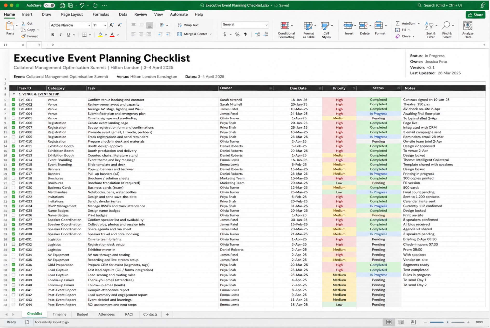
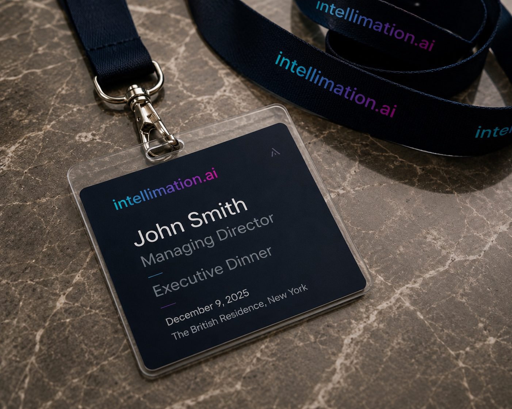
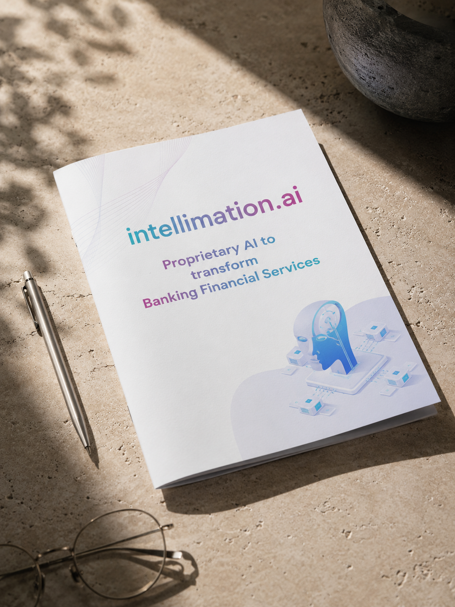
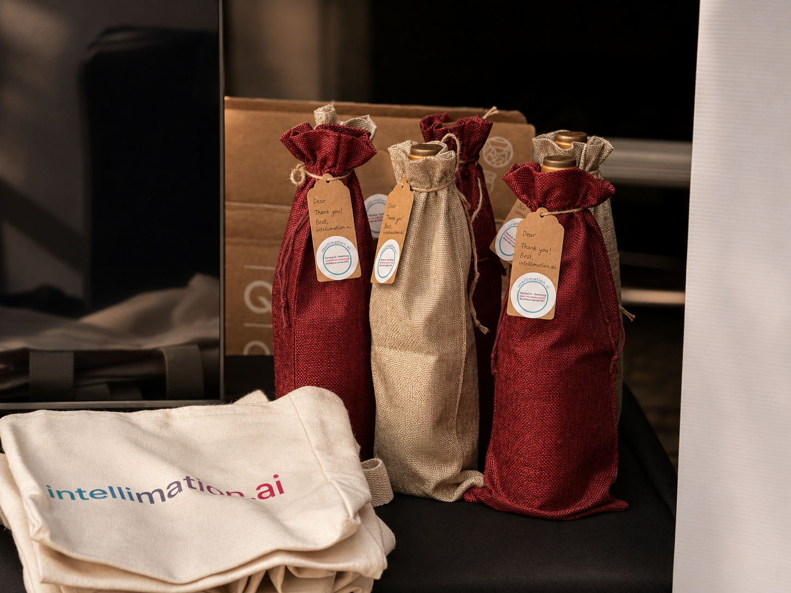
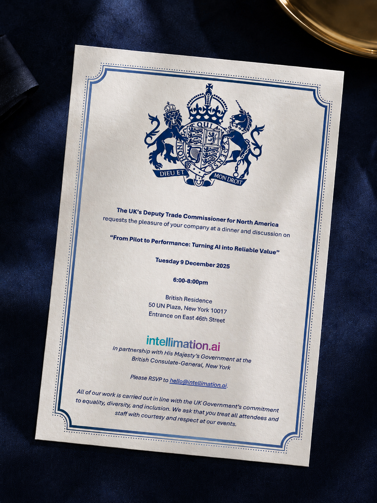

Executive Marketing
& Events
Go-to-Market Events & Executive Engagement · intellimation.ai
Go-to-Market Events & Executive Engagement · intellimation.ai
Between March and December 2025, I coordinated marketing and operations for four executive events for intellimation.ai: SRP Europe, a 350+ delegate industry conference; the Collateral Management Optimisation Summit, the company's own flagship summit in London; the Cornell Club Executive Dinner in New York; and a reception with the British Consulate-General, also in New York, as part of a small team working directly with the CEO and commercial leadership. Across all four, I owned the marketing and operational thread that connected every stage of the event journey: invitations, branded collateral, attendee management, on-site coordination and post-event follow-up.
Alongside these events, I produced the executive outreach campaigns and marketing materials that supported the CEO's meetings with prospective US clients through July and August, part of the same go-to-market motion rather than a standalone campaign. Rather than treating each touchpoint as one-off, I built repeatable invitation, tracking and follow-up processes that supported enterprise pipeline development and relationship-building with senior decision-makers across global financial institutions.
Some visuals are editorial recreations created for portfolio presentation. Original client materials have been anonymised or recreated where necessary due to NDA and confidentiality obligations. All project work, deliverables and outcomes reflect genuine professional experience.
Planned and coordinated every stage of executive event delivery, ensuring a consistent experience before, during and after each event.

Every event ran from a single planning checklist covering venue, registration, exhibition booth, branding and speaker logistics, owned end to end rather than split across disconnected trackers. Attendee lists, RSVP status and on-the-day accreditation were maintained in linked spreadsheets, so the same record was accurate whether it was being checked by me, the CEO, or the team on the ground.
Built targeted invitation lists using CRM data, LinkedIn research and enterprise account segmentation to identify senior decision-makers from banks, asset managers, hedge funds and financial technology firms.
Lists were built by cross-referencing CRM account data with LinkedIn research, segmenting by institution type, seniority and existing relationship strength before a single invitation went out, so outreach went to the people most likely to say yes, not the widest possible net.
Produced the branded event assets used across conferences and executive meetings.




The final event of the programme: a partnership dinner with HM Government at the British Residence in New York.

In December 2025, intellimation.ai partnered with the British Consulate-General in New York to host senior financial services leaders for a dinner and discussion on turning AI pilots into reliable production value. I managed invitations, RSVP tracking and on-site coordination for a reception carrying the added weight of a government co-host: a different register of formality to a conference booth, and a different bar for the collateral that represented us there.
Supported structured follow-up after every event through CRM updates, attendee tracking, lead qualification and coordinated outreach between marketing and sales.
Every confirmed attendee was logged into the CRM within 48 hours of the event with meeting notes, interest areas and next steps attached, so sales could pick up a conversation without re-asking what had already been discussed on the night. Follow-up outreach was sequenced by priority: board-level introductions first, general interest last, rather than sent as one blanket email to everyone who attended.
The Collateral Management Optimisation Summit funnel, tracked end to end from invitation through to commercial follow-up.
The Cornell Club Executive Dinner followed a similar shape at smaller scale: around 40 senior leaders attended the invitation-only dinner, and the follow-up conversations that came out of it supported 5 further product demonstrations and POC opportunities. SRP Europe, as a third-party conference rather than an intellimation-hosted event, doesn't carry the same attendee-funnel data. Its value was brand visibility and relationship-building rather than a trackable registration list.
What worked, and what I'd change if I ran this programme again.
I'm most proud of treating these as one connected programme rather than four standalone campaigns: the same invitation workflow, tracking system and follow-up process carried across every event, so quality didn't reset each time the venue or audience changed.
If I ran it again, I'd put a standardised event measurement framework in place from day one: consistent KPIs, CRM attribution and post-event reporting applied the same way across every event. It's the difference between four good events and a programme you can actually compare, improve and make the case for investing more in.
Four executive events, one connected process from invitation to follow-up.